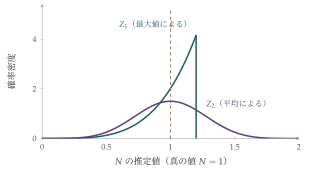

STEP III 1998、第14問
先に進む前に問題を読んでおこう。問題は STEP Support Programme の問題データベースにある： step.maths.org/questions/98-s3-q14
導入
第二次世界大戦中、連合国の情報部はドイツが戦車を何両生産しているかを知りたがっていた。スパイの報告によれば、月に約 \(1400\) 両であった。統計学者たちは別の方法をとった。鹵獲した戦車のギアボックスなどの部品にはシリアル番号が刻まれており、シリアル番号は事実上 \(1, 2, \ldots, N\) からの無作為標本（random sample）とみなせる。番号だけをもとに、彼らは生産数を月に約 \(250\) 両と推定した。よく引用される数字では、戦後に調べられたドイツ側の記録は \(245\) 両を示していた。統計学者たちはスパイよりはるかに正確だったのである。
この問題では、シリアル番号から \(N\) を推定する二つの方法を比較する。どちらも平均的には正しい。しかし一方は他方よりはるかに効率よくデータを使っており、どちらがそうなのかを調べることで、推定理論の中心的な考え方にたどり着く。すなわち、平均的に正しい推定量のうちでは、ばらつきが最も小さいものを選ぶべきである。
取りかかる前に
\(M\) を \([0, N]\) 上の独立な \(n\) 個の一様分布に従う値の最大値とするとき、\(\mathrm{P}(M \leq m)\) はいくらか。
\(M \leq m\) となるのは、すべての \(X_i \leq m\) となるときであり、かつそのときに限る。よって \(0 \leq m \leq N\) に対して \(\mathrm{P}(M \leq m) = \bigl(\frac mN\bigr)^n\) である（第 12.25 節 と比較せよ）。これを微分すると、\(M\) の確率密度関数（probability density function）は \(\frac{nm^{n-1}}{N^n}\) となる。
順を追って解く
段階 1 どちらも不偏である
\(M\) について： \[\mathrm{E}(M) = \int_0^N m\cdot\frac{nm^{n-1}}{N^n}\,\mathrm{d}m = \frac{n}{n + 1}N, \qquad\text{よって}\qquad \mathrm{E}(Z_1) = \frac{n + 1}{n}\cdot\frac{n}{n + 1}N = N.\] 平均について：各 \(X_i\) の期待値は \(\frac N2\) であるから、\(\mathrm{E}(Z_2) = \frac2n\cdot n\cdot\frac N2 = N\) である。■
二つの推定量（estimator）はどちらも不偏（unbiased）である。すなわち、平均的には正しい答えを与える。係数 \(\frac{n + 1}{n}\) は、観測された最大のシリアル番号が常に \(N\) より少し小さくなることを補正している。
段階 2 それぞれの分散
\(\mathrm{E}(M^2)\) を求め、それを用いて \(\mathrm{Var}(M)\) を求めよ。\(Z_2\) については、\([0, N]\) 上の一様分布に従う確率変数一つの分散はいくらか。
\(\mathrm{E}(M^2) = \int_0^N m^2\cdot\frac{nm^{n-1}}{N^n}\,\mathrm{d}m = \frac{n}{n + 2}N^2\) であるから、 \[\begin{aligned} \mathrm{Var}(M) &= \frac{n}{n + 2}N^2 - \frac{n^2}{(n + 1)^2}N^2 = \frac{nN^2}{(n + 1)^2(n + 2)}, \\ \mathrm{Var}(Z_1) &= \frac{(n + 1)^2}{n^2}\mathrm{Var}(M) = \frac{N^2}{n(n + 2)}. \end{aligned}\] \([0, N]\) 上の一様分布（uniform distribution）に従う確率変数の分散（variance）は \(\frac{N^2}{12}\) であり、\(X_i\) は独立であるから、 \[\mathrm{Var}(Z_2) = \frac{4}{n^2}\cdot n\cdot\frac{N^2}{12} = \frac{N^2}{3n}. \qed\]
段階 3 どちらがよいか
\(\frac{1}{n(n + 2)}\) と \(\frac{1}{3n}\) を比較せよ。\(n\) が大きくなるとき、それぞれはどう振る舞うか。
比は \(\frac{\mathrm{Var}(Z_1)}{\mathrm{Var}(Z_2)} = \frac{3}{n + 2}\) であり、\(n \geq 2\) のとき \(1\) より小さい（\(n = 1\) のときは等しく、このとき二つの推定量は一致する）。したがって \(Z_1\) のほうがよく、\(n\) が大きいときにははるかによい。\(Z_1\) の標準偏差（standard deviation）は \(\frac1n\) のように小さくなるが、\(Z_2\) の標準偏差は \(\frac{1}{\sqrt n}\) のようにしか小さくならない（図 13.3.1）。シリアル番号が \(n = 10\) 個あるとき、\(Z_1\) の標準偏差は \(N\) の約 \(9\%\)、\(Z_2\) の標準偏差は約 \(18\%\) である。
\(Z_1\) を選ぶべき理由はもう一つある。\(Z_2\) はばかげた値になりうるのである。シリアル番号が \(10\)、\(20\)、\(300\) のとき、\(Z_2 = \frac23 \cdot 330 = 220\) となり、実際に観測したシリアル番号より小さい。\(Z_1 = \frac43 \cdot 300 = 400\) のほうは、最大の観測値より小さくなることは決してない。■

振り返り
不偏性。各推定量は、その期待値がちょうど \(N\) となるように定数倍されていた。
分散を比較する。不偏推定量のうちでは、分散が小さいほうが信頼できる。
最も情報量の多い統計量を使う。最大値は、標本がもつ \(N\) についての情報をすべて含んでいる。平均はその多くを無駄にしてしまう。
背後にある数学
十分性
なぜ最大値はこれほどよいのだろうか。最大値 \(M\) が与えられると、残りの値は \(N\) が何であっても単に \([0, M]\) 上の一様分布に従う。つまり、それらは \(N\) についてそれ以上の情報をもたない。最大値は十分統計量（sufficient statistic）なのである。ラオ（C. R. Rao）とブラックウェル（David Blackwell）による定理（1945–47年）は、どんな不偏推定量も、十分統計量を与えたときの条件付き期待値に置き換えることで改良できる（少なくとも悪くはならない）ことを述べており、ここではこの操作によって \(Z_2\) が \(Z_1\) に変わる。さらにレーマン–シェフェの定理（Lehmann–Scheffé theorem）により、\(Z_1\) が分散の最も小さい不偏推定量であることがわかる。また、\(Z_1\) の分散が \(\frac{1}{n^2}\) のように減少し、多くの推定量の \(\frac1n\) より速いことにも注意しよう。これは \(N\) が分布の端点であり、データがそこに押し寄せるように集まるからである。
離散版
実際のシリアル番号は整数 \(1, 2, \ldots, N\) であり、非復元抽出（sampling without replacement）で得られる。このとき最良の不偏推定値は \(\hat N = m + \frac mk - 1\) である。ここで \(m\) は観測された \(k\) 個のシリアル番号の最大値であり、この式は最大値に観測値どうしの平均的な間隔を加えたものになっている。主にギアボックスと車輪のシリアル番号に基づくこの種の推定を用いて、連合国の統計学者たちはドイツの生産数を月に約 \(246\) 両と推定した。これに対し、のちにドイツ側の記録で判明した数は \(245\) 両、情報部の報告が示唆していた数は \(1400\) 両であった。
この方法はその後も何度も用いられてきた。たとえば、新しい消費者向け製品が何台作られたかを、最初に売られた数台のシリアル番号から分析者が推定した例がある。メーカーもこの教訓を学び、今では多くのメーカーが、単純な連番として読み取れないようにシリアル番号を符号化している。Richard Ruggles と Henry Brodie は、1947年に Journal of the American Statistical Association で戦時中のこの研究について記している。
思考のスキル
推定量は確率変数である。平均的に正しいか（偏り）、どれだけばらつくか（分散）を問い、誤差の小さいほうを選ぶこと。
大学では、これは効率的な推定の理論へとつながる。クラメール–ラオの下界（Cramér–Rao bound）は不偏推定量の分散がどこまで小さくなりうるかを示し、十分性はその下界にどうすれば到達できるかを説明する。
次の一歩
平均二乗誤差。偏りのある推定量 \(M\) について、\(\mathrm{E}(M - N)^2 = \mathrm{Var}(M) + \bigl(\mathrm{E}(M) - N\bigr)^2\) が成り立つ。これを計算し、\(\mathrm{Var}(Z_1)\) と比較せよ。また、\(\mathrm{E}(cM - N)^2\) を最小にする定数 \(c\) を求めよ。
最小値も。\((n + 1)\min\{X_i\}\) もまた \(N\) の不偏推定量であることを示し、その分散を求めよ。これはよい推定量だろうか。
離散版の公式。シリアル番号 \(1, \ldots, N\) から \(k\) 個を非復元抽出し、その最大値を \(m\) とする。\(\mathrm{P}(\max \leq m) = \binom mk\big/\binom Nk\) を示し、\(k = 1\) のとき \(m + \frac mk - 1\) が不偏であることを確かめよ。
戦車。鹵獲した \(5\) 両の戦車のシリアル番号が \(19\)、\(40\)、\(42\)、\(60\)、\(98\) であるとき、製造された戦車の数を推定せよ。
さらに学ぶために
Richard Ruggles & Henry Brodie, “An empirical approach to economic intelligence in World War II”, Journal of the American Statistical Association 42 (1947)。当事者による原論文。
John Rice, Mathematical Statistics and Data Analysis（Duxbury）。偏り、分散、十分性について。
David Spiegelhalter, The Art of Statistics（Pelican）。